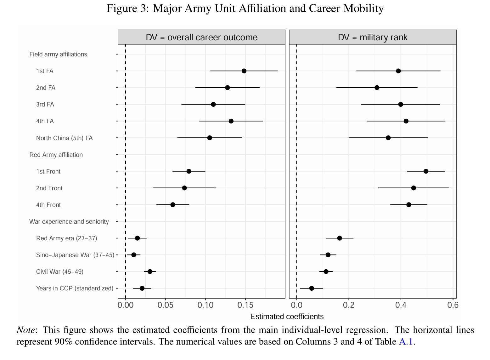
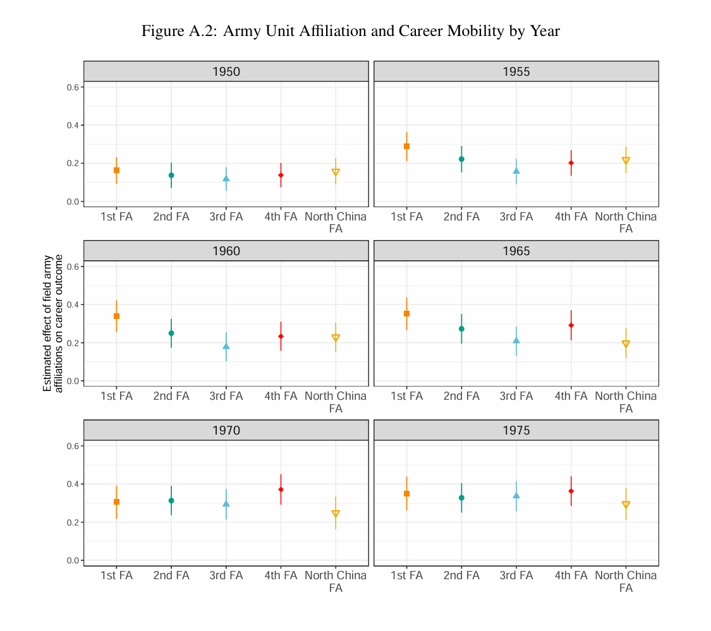
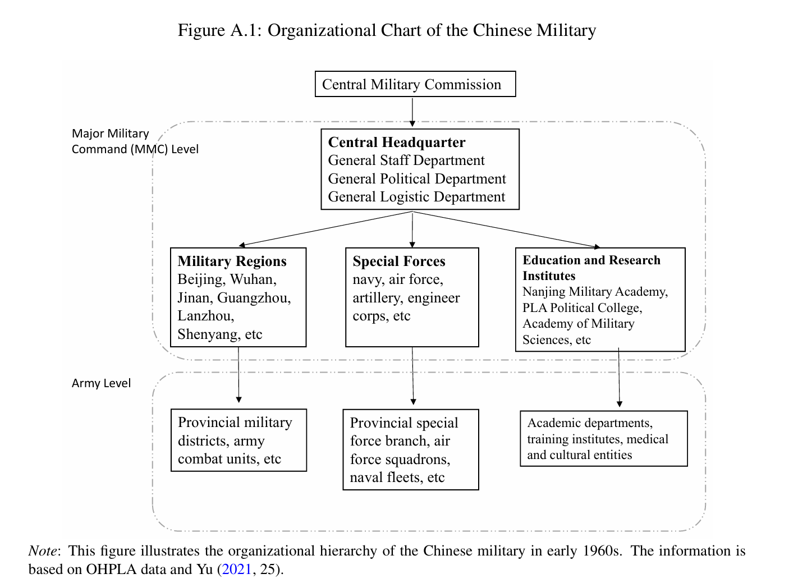
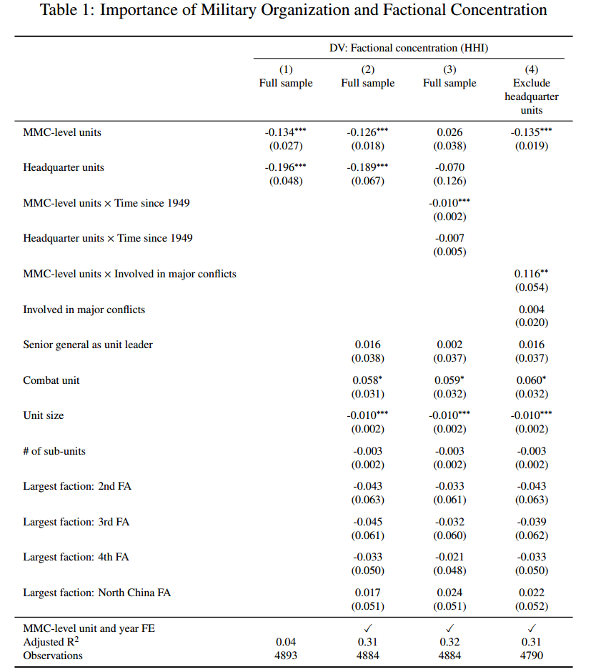

Chapter 5 结果
5.1 个体层面的分析
革命后的中国，不同的派系享有差不多的晋升可能性

前五行：与派系有关的估计
与五个野战军有联系的军事精英享有差不多的职业生涯。置信区间基本重合，t-test显示没有显著差异。
红军方面军来看，也是同理，差不多的职业生涯。
最后四行：与资历有关的估计
参加革命战役与职业发展有密切联系。
有趣的是，一个人是否晋升为高级政治or军事领导，与内战经历和党龄有关。一个人能否拿到更好的军衔与红军时期的革命经历有关。

看看1955年的一野和1960年的四野。
总体来说，权力平衡是大的趋势。
5.2 组织层面的分析
5.2.1 测量

收集了每个组织的人员的资料，确定其领导人的野战军所属单位
计算每个组织的time-variant HHI，衡量一个组织的人员构成隶属于一个野战军个人主导，或者被多个野战军分割的程度
如果都是一个野战军的人，一家独大，那么HHI就比较大
5.2.2 回归结果
估计以下回归：
HHI ~ α这个组织的重要性 + β这个组织的重要性×政权安全威胁 + 固定效应
派系重要性：军级→1，主要军事司令部→2，首都防御的五个关键总部（中央军委，国防部，总参，总政，北京军区）→3
纳入组织重要性何政权安全威胁的相互作用，捕捉精英分裂和军事有效性之间的潜在权衡（？）
主要期望：派系分裂水平HHI随着这个组织重要性的增加而增加。存在军事行动时，抵御外敌重要；不存在军事行动时，派系制衡重要

第一列第二列：如果一个军事单位的层级比较高，那么它的派系集中程度就比较低（制衡策略起作用了）
第三列：mmc级单位比军级单位多样化得快得多
第四列：特定军事组织在特定年份是否参与了军事行动得积极行动的度量，表明虽然强大的高级军事单位在革命后被分散，但是承担军事行动的任务时，被分散的过程会减缓，战斗单位比非战斗单位有更大的集中程度